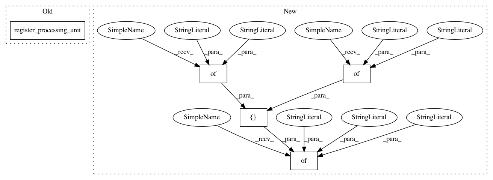

80c863816b382afee76dd8f92c7f60d2579d56b8,snips_nlu/tests/test_nlu_engine.py,TestSnipsNLUEngine,test_should_be_serializable_into_dir,#TestSnipsNLUEngine#,407
Before Change
- make me [number_of_cups:snips/number](one) cup of coffee please
- brew [number_of_cups] cups of coffee)
dataset = Dataset.from_yaml_files("en", [dataset_stream]).json
register_processing_unit(TestIntentParser1)
register_processing_unit(TestIntentParser2)
parser1_config = TestIntentParser1Config()
parser2_config = TestIntentParser2Config()
After Change
}
},
},
"config": {
"unit_name": "nlu_engine",
"intent_parsers_configs": [
{
"unit_name": "test_intent_parser1",
"my_param1": "foo"
},
{
"unit_name": "test_intent_parser2",
"my_param2": "bar"
}
]
},
"intent_parsers": [
"test_intent_parser1",
"test_intent_parser2"
In pattern: SUPERPATTERN
Frequency: 3
Non-data size: 5
Instances
Project Name: snipsco/snips-nlu
Commit Name: 80c863816b382afee76dd8f92c7f60d2579d56b8
Time: 2019-01-02
Author: adrien.ball@snips.ai
File Name: snips_nlu/tests/test_nlu_engine.py
Class Name: TestSnipsNLUEngine
Method Name: test_should_be_serializable_into_dir
Project Name: snipsco/snips-nlu
Commit Name: 80c863816b382afee76dd8f92c7f60d2579d56b8
Time: 2019-01-02
Author: adrien.ball@snips.ai
File Name: snips_nlu/tests/test_nlu_engine.py
Class Name: TestSnipsNLUEngine
Method Name: test_should_be_deserializable_from_dir
Project Name: snipsco/snips-nlu
Commit Name: 80c863816b382afee76dd8f92c7f60d2579d56b8
Time: 2019-01-02
Author: adrien.ball@snips.ai
File Name: snips_nlu/tests/test_nlu_engine.py
Class Name: TestSnipsNLUEngine
Method Name: test_should_serialize_duplicated_intent_parsers
Project Name: snipsco/snips-nlu
Commit Name: 80c863816b382afee76dd8f92c7f60d2579d56b8
Time: 2019-01-02
Author: adrien.ball@snips.ai
File Name: snips_nlu/tests/test_nlu_engine.py
Class Name: TestSnipsNLUEngine
Method Name: test_should_be_serializable_into_dir